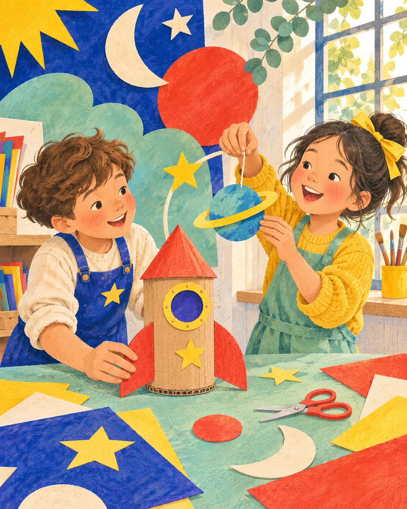

Раннее развитие
Игры на речь, моторику и координацию. Короткие блоки с паузами и движением.
Математика, чтение, творчество и первые эксперименты. Найдите программу по интересам ребёнка и запишитесь на пробное занятие.

Игры на речь, моторику и координацию. Короткие блоки с паузами и движением.
Чтение, счёт и графические задания в спокойном темпе.
Английский через игры, мини-сценки и тематические проекты.
Иллюстрация, лепка, бумажная пластика и групповые выставки работ.
Опыты с водой, светом и магнитами, конструирование и первые роботы.
Проектные недели, тематические мастер-классы и занятия в небольших группах.
У каждой программы указан возраст, длительность и стоимость пробного занятия.
Показано 12 из 12
3–5 лет
3–5 лет · 35 минут. Сказка, пальчиковые игры и задания на словарь.
3–5 лет
3–5 лет · 35 минут. Гуашь, крупные формы и простые коллажи.
3–5 лет
3–5 лет · 35 минут. Ритм, движение и знакомство с инструментами.
5–7 лет
5–7 лет · 45 минут. Счёт, закономерности и логические игры.
5–7 лет
5–7 лет · 45 минут. Звуки, первые слова и пересказ короткой истории.
5–7 лет
5–7 лет · 45 минут. Бытовая лексика, песни и сценки.
7–10 лет
7–10 лет · 55 минут. Свет, магниты и безопасные опыты под наблюдением педагога.
7–10 лет
7–10 лет · 60 минут. Сборка механизма и испытание на простых задачах.
7–10 лет
7–10 лет · 55 минут. Раскадровка, персонажи и короткая иллюстрированная история.
Каникулы
7–10 лет · 5 дней. Макет ракеты и итоговая выставка.
Каникулы
5–7 лет · 5 дней. Карты, сказки и поделки о разных странах.
Каникулы
6–10 лет · 90 минут. Один законченный творческий проект.

На пробном занятии ребёнок знакомится с педагогом и выполняет одно небольшое задание вместе с группой.
В демонстрационном расписании группы рассчитаны на 6–8 детей. Педагог помогает выбрать уровень после знакомства.
Основные материалы предусмотрены в сценарии занятия. С собой достаточно взять сменную обувь и воду.
Ребёнок выполнит небольшое задание вместе с группой. После занятия можно обсудить следующий шаг с педагогом.
Бот спросит возраст и интересы, предложит программу и покажет запись на пробное занятие.